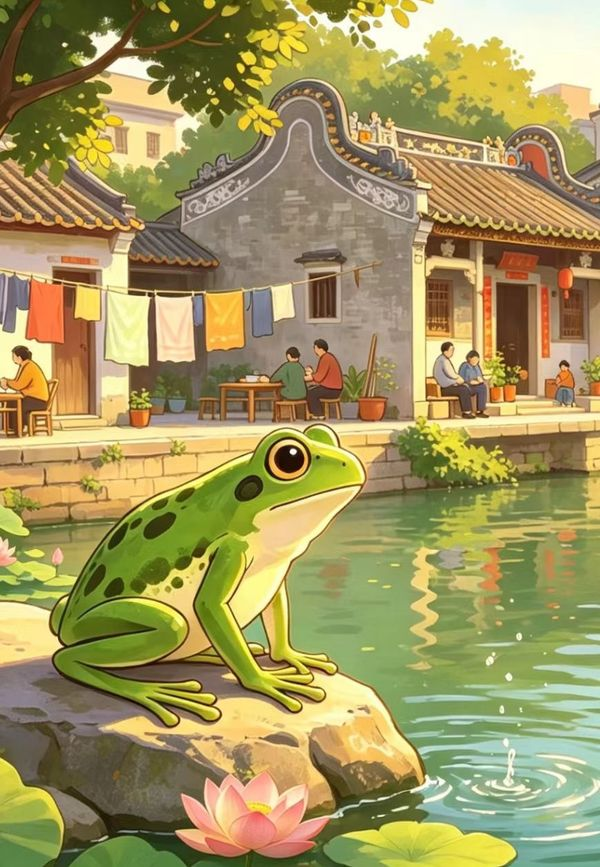

🐸 🐷 🐦 🦁
🏯
🌺
🎤
齐齐望过去
粤语童谣 · 岭南小歌星挑战
📖
🎵
🎧
🌟
开 始 挑 战
🌐 进入VR探索场景
←
📖 第一关 · 读一读
◀
▶
🎤
点按开始录音跟读
完成读一读，领取碎片 ✓
←
🎵 第二关 · 跟唱歌曲
🎤
播放歌曲后，点按录音跟唱
▶ 播放歌曲
完成跟唱，领取碎片 ✓
←
🎧 第三关 · 接唱后半句
听前半句，接唱后半句
🎧 仔细听，音乐停了就轮到你唱！
选择难度：
⭐
难度一
⭐⭐
难度二
🎤
播放后自动开始录音
▶ 播放接唱音乐
完成接唱，领取碎片 ✓
←
🌟 第四关 · 完整演唱

🎤 完整演唱《齐齐望过去》
选择难度：
⭐
难度一
⭐⭐
难度二
🎤
点按录音，完整演唱
▶ 播放音乐
完成演唱，领取碎片 ✓
🎖 岭南小歌星 🎖
恭喜你完成了《齐齐望过去》所有挑战！
再玩一次
保存徽章图片